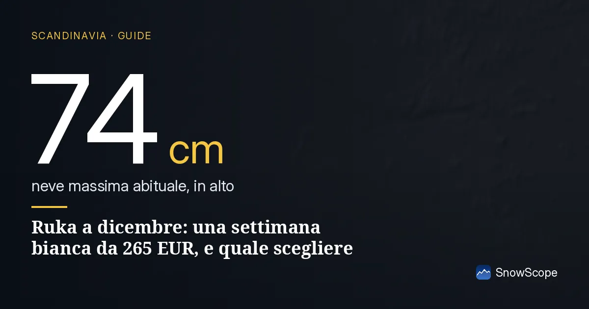

Ruka a dicembre: una settimana bianca da 265 EUR, e quale scegliere
Prima i soldi, perché sono semplici: il listino ufficiale 2026-27 di Ruka indica 58 EUR il giornaliero adulti e 265 EUR per 6 giorni. La neve richiede più attenzione. In un tipico 15 dicembre i nostri 46 inverni di storico danno 36 cm, ma nella prima settimana di dicembre solo il 39 % degli inverni aveva almeno 30 cm.
Le previsioni neve in tempo reale per Ruka nell'app SnowScopeAltezza neve, allerte powder e mappa 3D, gratis.
Una settimana prima di Natale, conti alla mano
Uno skipass adulti di 6 giorni a 265 EUR è uno dei prezzi settimanali fissi più bassi di questa serie. Lo stesso listino fissa il giorno a 58 EUR. Ruka e Pyhä condividono un listino, quindi i numeri sono gli stessi in entrambe. Alloggio, voli e pasti si aggiungono, e non li quotiamo.
Con un prezzo di listino fisso, il risparmio non è sullo skipass ma sulle date: scegliete una settimana prima delle vacanze di Natale, quando l'alloggio di solito si trova più facilmente.


Quale settimana di dicembre
La quota di inverni con almeno 30 cm sale in fretta durante il mese: 39 % dall'1 al 7 dicembre, 61 % dall'8 al 14, 72 % dal 15 al 21 e 85 % a Natale. Il primo giorno abituale con 30 cm è il 5 dicembre.
Inizio dicembre, con la sola neve naturale, è quindi al massimo testa o croce. Da metà mese le probabilità sono a vostro favore, e la settimana di Natale è la più sicura.
Qui la quota conta poco
Ruka è un fell, una collina bassa e arrotondata, con impianti tra 286 m e 494 m, 25 km di piste mappate e 24 impianti. Il nostro storico dà un solo valore per tutta l'area: in alto non c'è molta più neve che in basso. Un anno magro (1 su 10) ha 20 cm il 15 dicembre, uno ricco 46 cm. Mai profonda, raramente scoperta: in nessuno dei nostri 46 inverni il terreno era scoperto il 15 dicembre.
La tendenza è piatta o un po' migliore: la media di dicembre era di 37 cm nei primi 15 inverni e di 36 cm negli ultimi 15, e la quota di settimane di Natale con 30 cm è salita dall'80 % al 93 %.
Piano B: Pyhä-Luosto
Pyhä-Luosto, più a nord-ovest, ha quasi lo stesso dicembre: 37 cm in un tipico 15 dicembre e il 72 % degli inverni con 30 cm nella settimana dal 15 al 21 dicembre. Stessi prezzi, 58 EUR al giorno e 265 EUR per 6 giorni, e l'apertura ufficiale prevista è il 27 novembre 2026.
Ruka per più impianti e un paese più vivace, Pyhä per una settimana più tranquilla; neve e skipass saranno più o meno gli stessi.
Consigli per sciatori
- Prenotate dal 15 dicembre in poi: il 72 % dei nostri inverni aveva 30 cm quella settimana, contro il 39 % della prima.
- Mettete in conto 265 EUR di skipass per 6 giorni e concentratevi sul trovare un alloggio più economico prima delle feste.
- Aspettatevi giornate corte e poco luminose: organizzate lo sci attorno alle poche ore di luce.
- Portate un vero abbigliamento da grande freddo; dicembre nella Lapponia finlandese può essere gelido.
Altre mappe (siti esterni)
Riferimenti e crediti
- Ruka: official lift-pass prices (2026-27), checked 13 November 2026 www.ruka.fi/en/shop/skipasses
- Pyhä-Luosto: official lift-pass prices (2026-27), checked 13 November 2026 www.pyha.fi/en/en/skiresort-winter/lift-tickets
Su questi numeri
Numeri della neve: storico neve SnowScope, 46 inverni passati (1980-81 - 2025-26) alle quote della località, corretto per la quota (una stima per un'area, non i bollettini della località); "buona neve" = 30 cm o più al suolo in media nella settimana. Mappa: la nostra altezza abituale al 15 dicembre distribuita sul terreno secondo la quota. Piste e impianti: mappatura OpenSkiMap. Skipass: listini ufficiali delle località, verificati il 13 novembre 2026; i prezzi possono cambiare.
Bollettini valanghe ufficiali: EAWS – European Avalanche Warning Services
Cita questo articolo
Per ricerca, didattica o stampa: numeri e grafici sono liberamente riutilizzabili con licenza CC BY 4.0 citando così.
SnowScope (2026), Ruka a dicembre: una settimana bianca da 265 EUR, e quale scegliere, https://snowscope.app/blog/it/2026/11/ruka-december-skiing-finland-early-season-price.html, consultato il 2026-11-14
SnowScope (Atlas Labs). (2026, November 14). Ruka a dicembre: una settimana bianca da 265 EUR, e quale scegliere. SnowScope snow reports. https://snowscope.app/blog/it/2026/11/ruka-december-skiing-finland-early-season-price.html
BibTeX
@misc{snowscope2026rukadecemberskiingfinlan,
author = {{SnowScope (Atlas Labs)}},
title = {Ruka a dicembre: una settimana bianca da 265 EUR, e quale scegliere},
year = {2026},
month = nov,
howpublished = {\url{https://snowscope.app/blog/it/2026/11/ruka-december-skiing-finland-early-season-price.html}},
note = {Published 2026-11-14 16:44 UTC; accessed 2026-11-14}
}· CC BY 4.0 · Metodi, dati e strumenti →
Ruka: neve e temperatura per quota, quest'inverno vs lo scorso (strumenti) →
Segui Ruka
Gratis: un messaggio quando arriva la neve e il meteo ogni mattina.
Altri bollettini neve

Orcières Merlette offre una base elevata a 1.826 m e uno skipass di 6 giorni da 227 EUR, rendendolo una scelta affidabile per una vacanza sulla neve a dicembre.

Sciare a Obertauern a dicembre: 43 cm in un tipico 15 dicembre a metà montagna, skipass 6 giorni a 331 EUR prima di Natale. Storico neve e prezzi.

Mt. Baker a dicembre: 46 in (116 cm) di neve a metà montagna in un tipico 15 dicembre, e uno skipass da 98,80 $ dal lunedì al giovedì, venduto solo in giornata alla cassa.